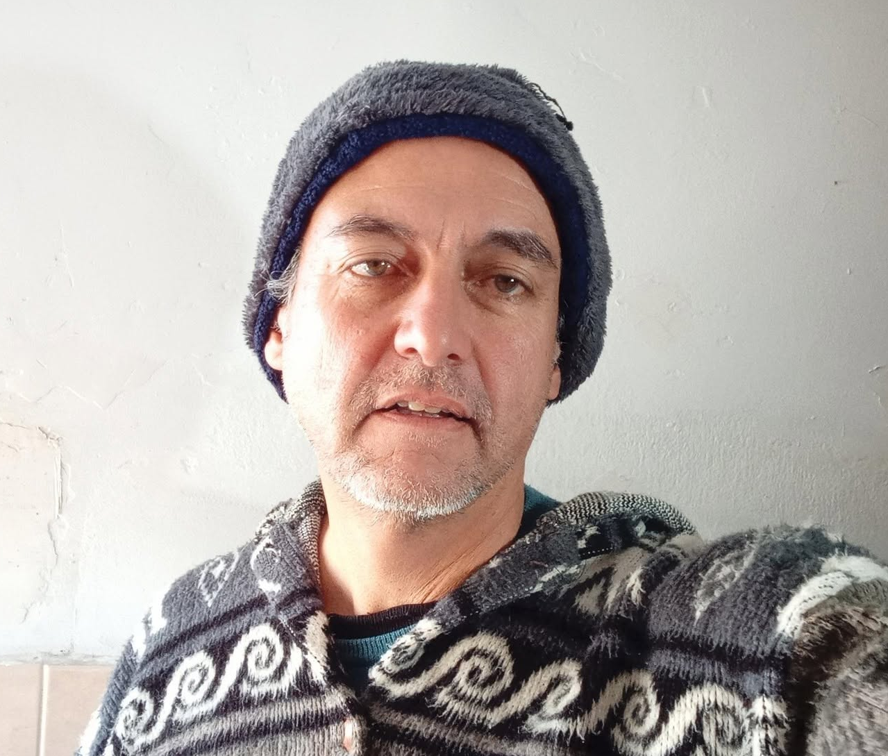

Quiénes somos
 CC BY 2.0 Bart Everson
CC BY 2.0 Bart Everson
Somos una red de personas asentadas en la zona de Minas de Corrales (Rivera) que compartimos la búsqueda práctica de soberanía alimentaria, salud y cuidado ambiental. Nos une el trabajo cotidiano en la tierra: la huerta, el monte nativo, el intercambio de semillas y saberes con productores y vecinos de la región.
Este sitio lo creó y mantiene una persona de la red — podés conocerla en la sección Sobre mí.
Qué se puede hacer aquí
 CC BY-SA 4.0 Wikimedia
CC BY-SA 4.0 Wikimedia
Minas de Corrales y su entorno ofrecen condiciones concretas para una variedad de prácticas agroecológicas y permaculturales:
Huerta familiar y comunitaria
La Intendencia de Rivera cuenta con un Programa de Huertas Agroecológicas con talleres gratuitos para vecinos y productores del departamento, orientado a producción sin agroquímicos, compostaje, canteros y fertilizantes naturales. Es un recurso activo y accesible para quienes quieran arrancar o profundizar.
Manual descargable (rivera.gub.uy)
Medicina natural y plantas nativas
La proximidad al bioma de las Quebradas del Norte —con ecosistemas subtropicales únicos en Uruguay— permite el rescate y cultivo de flora medicinal nativa: ceibo, tala, guayabo, pitanga y otras especies propias del monte ribereño.
Bioconstrucción y diseño en tierra
La zona ofrece materiales locales (barro, piedra basáltica, madera de monte) que hacen viable la bioconstrucción con adobe, quincha y techos vivos. Hay interés creciente en la red vecinal por avanzar en este tipo de diseños.
Rescate e intercambio de semillas
Uruguay tiene una Red Nacional de Semillas Nativas y Criollas activa con enfoque agroecológico y participativo. La frontera con Brasil facilita además el acceso a variedades del sur de Río Grande do Sul, donde las redes de intercambio campesinas tienen larga trayectoria.
Mingas y jornadas colectivas
El trabajo colectivo por turnos (mingas) es una práctica habitual en la red. Se organizan jornadas para avanzar en huertas, construcciones o diseños que benefician a distintos integrantes.
La red y sus aliados
 CC BY 2.5 ar GCBA
CC BY 2.5 ar GCBA
Este nodo se conecta con un ecosistema más amplio de proyectos e iniciativas cercanas, tanto en Uruguay como en el sur de Brasil.
En Uruguay
-
Red de Agroecología del Uruguay — articula productores, técnicos y consumidores. Organizan intercambios, ferias y actividades en el interior.
redagroecologia.uy -
Red Nacional de Semillas Nativas y Criollas — conservación, multiplicación e intercambio de semillas locales con enfoque de soberanía alimentaria.
Ver proyecto - Ecoaldeas en Uruguay — la mayoría están en el sur del país (Rocha, Montevideo), pero la red nacional conecta personas interesadas en proyectos del interior. Son punto de referencia y potencial destino para intercambios.
En el sur de Brasil (corredor fronterizo)
- Feiras Ecológicas — Rio Grande do Sul — red activa de ferias agroecológicas semanales donde productores familiares comercializan sin intermediarios. Accesibles desde Corrales a través de Sant'Ana do Livramento.
- Centros de Permacultura — RS — Río Grande do Sul tiene varios centros de referencia con larga historia de formación y actividades abiertas. Son un destino natural para intercambios desde el corredor Rivera-Brasil.
- Redes de semillas campesinas — RS — el movimiento de semillas criollas en el sur de Brasil es uno de los más consolidados de Sudamérica, con ferias de intercambio periódicas en municipios cercanos a la frontera.
Si conocés proyectos agroecológicos, ecoaldeas o iniciativas en la región que deberían estar en esta lista, escribinos. Esta red crece con información compartida.
Para visitar cerca
 CC BY-SA 3.0 M.E. Leal
CC BY-SA 3.0 M.E. Leal
La zona norte de Uruguay concentra algunos de los paisajes más singulares del país, a poca distancia de Corrales.
Valle del Lunarejo — Rivera (~80 km)
Paisaje Protegido integrado al Sistema Nacional de Áreas Protegidas y Reserva de Biosfera UNESCO. Quebradas basálticas profundas, saltos de agua, bosque subtropical y más de 150 especies de aves. Hay senderos de distinta dificultad, cabalgatas y salidas guiadas de avistamiento. Acceso recomendado con vehículo propio.
valledellunarejo.uy
Reserva Natural Cuchilla de Haedo — Rivera
Corredor biológico que abarca gran parte del norte uruguayo, con monte nativo, pastizales serranos y fauna de transición subtropical. Ideal para caminatas y para entender el ecosistema local desde adentro.
Termas del Arapey — Salto (~180 km)
Aguas termales naturales con infraestructura consolidada. Un destino clásico del norte uruguayo accesible en una jornada desde Corrales.
Tacuarembó — ciudad (~100 km)
Capital del departamento vecino, con vida cultural activa y ferias rurales. Punto de parada útil para intercambios, abastecimiento y conexión con otras redes del interior.
Sant'Ana do Livramento — Brasil (~95 km)
Ciudad brasileña que forma conurbación con Rivera, sin frontera física entre ambas. Acceso directo a mercados, ferias y redes del sur de Río Grande do Sul. Para quienes vienen de Brasil, es la puerta natural de entrada a la red.
Sobre mí

Me mudé desde Montevideo a los alrededores de Minas de Corrales buscando tierra, naturaleza y una vida más cercana a lo que consumo. Trabajo en una empresa local en turnos que me dejan días libres semanales, que dedico a la huerta, a explorar el monte nativo y a conectar con otros proyectos de la región.
Fui parte del circuito de comercios naturales en Montevideo (como El Granero) antes de dar el salto al interior. Ese contraste —entre la comodidad urbana y la riqueza real que ofrece vivir en el norte— es parte de lo que me motivó a crear este espacio.
Durante noviembre de 2026 cuento con 23 días continuos de licencia que quiero poner al servicio de algún proyecto agroecológico o ecoaldeano: ya sea viajando a colaborar afuera, o recibiendo personas aquí en Corrales (hasta 2 en casa; para grupos más grandes coordino con agroecólogos de la zona). Si tenés una propuesta para esa ventana, escribime.
Convocatoria: Licencia de Noviembre 2026
 CC BY-SA 4.0 Suhasajgaonkar
CC BY-SA 4.0 Suhasajgaonkar
Durante noviembre de 2026 hay 23 días continuos de licencia disponibles para dedicar a proyectos agroecológicos o de ecoaldea — ya sea saliendo a colaborar o recibiendo personas aquí en Corrales.
Los detalles y la historia personal detrás de esta propuesta están en Sobre mí. Para proponer un intercambio, usá el formulario de contacto.
Sumate a la red
 CC BY-SA 4.0 Juancruztagliafico
CC BY-SA 4.0 Juancruztagliafico
La red está abierta a distintos tipos de vinculación — no hace falta comprometerse con todo de entrada:
Visitante / Punto de paso
Recibimos viajeros y ecoaldeistas que pasan por la zona en cualquier época del año. Para estancias cortas de hasta 2 personas, hay alojamiento disponible en casa. Para grupos más grandes, coordinamos con productores y agroecólogos de la zona.
Colaborador / Aliado
Personas con saberes prácticos (bioconstrucción, medicinas alternativas, huerta, logística) interesadas en intercambios puntuales o jornadas colectivas (mingas).
Futuro integrante
Personas interesadas en el co-diseño y desarrollo a largo plazo de una propuesta comunitaria y agroecológica en la zona de Corrales.
Completá el formulario y nos ponemos en contacto.